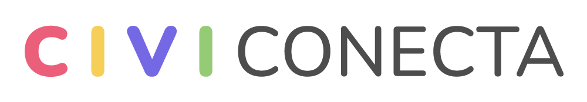
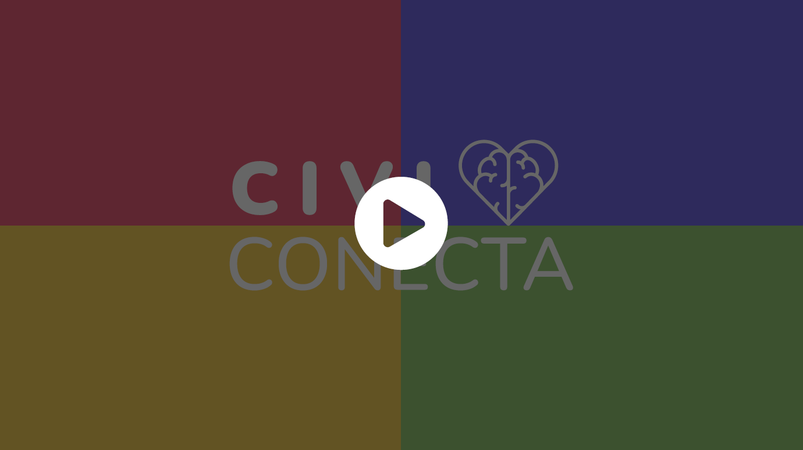

Con este programa podrás desarrollar en tus estudiantes competencias
socioemocionales que les permitan relacionarse de forma empática y respetuosa
en la sociedad.
¿Qué es
?

Desarrollar habilidades socioemocionales en tus estudiantes los ayudará a entender
y manejar sus emociones; establecer y alcanzar metas positivas; sentir y mostrar
empatía por los demás; construir y mantener relaciones saludables; y tomar
decisiones responsables, es decir, los prepara para la vida.
Visión de Civiconecta
Convertirnos en una institución líder en el ámbito educacional que impulse el
desarrollo de aprendizajes y actitudes, con foco en las habilidades
socioemocionales, de niños, niñas y jóvenes para que generen un impacto
positivo en la sociedad; apuntando a una formación integral e inclusiva; y
respondiendo a la necesidad de reducir el trabajo excesivo de docentes y
equipo directivo, tal como es la planificación y construcción de actividades.
Misión de Civiconecta
Crear recursos y materiales educativos cercanos a los intereses de los y las
estudiantes, atingentes con las necesidades actuales, que consideran el currículum
de Orientación vigente y la experiencia de docentes con trayectoria en aula, para
desarrollar habilidades del siglo XXI tales como: creatividad, colaboración,
resolución de problemas, pensamiento crítico, comunicación asertiva, entre otras;
contribuyendo así a la formación de ciudadanos y ciudadanas que puedan mejorar
su entorno inmediato, impactando positivamente en la sociedad actual.
¿Cuáles son las ventajas de
contar con CiviConecta?
Actividades
contextualizadas
Te ofrecemos material creado por
profesionales de la educación que entienden
tus necesidades, pues llevan más de 10
años en las aulas.
Creado por profesionales
de la educación
Te ofrecemos material creado por
profesionales de la educación que entienden
tus necesidades, pues llevan más de 10
años en las aulas.
Creado para docentes
Te ofrecemos material creado por
profesionales de la educación que entienden
tus necesidades, pues llevan más de 10
años en las aulas.
Enfocado en la formación socioemocional
Te ofrecemos material creado por
profesionales de la educación que entienden
tus necesidades, pues llevan más de 10
años en las aulas.
Creado por profesionales
de la educación
Te ofrecemos material creado por
profesionales de la educación que entienden
tus necesidades, pues llevan más de 10
años en las aulas.
Creado por profesionales
de la educación
Te ofrecemos material creado por
profesionales de la educación que entienden
tus necesidades, pues llevan más de 10
años en las aulas.